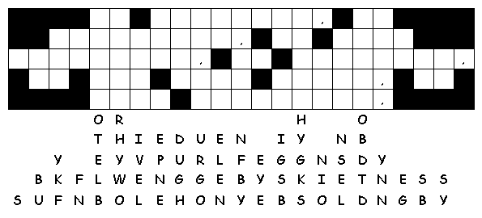

This week's lessons: 1 Samuel 17:(1a, 4-11, 19-23), 32-49 and Psalm 9:9-20 or 1 Samuel 17:57-18:5, 18:10-16 and Psalm 133 or Job 38:1-11 and Psalm 107:1-3, 23-32 2 Corinthians 6:1-13 Mark 4:35-41
Middle-School Pew-work ...Page 2
How can it make sense for Paul to describe himself as “having nothing, and yet possessing all things.”?
________________________________________________________________________________________________________________________________________________________________________________________________________________________________________________________________________________________________________________________
Legally, children and teens cannot own anything – their parents own all their possessions. /what do you possess in spite of this law?
______________________________________________________________________________________________________________________________________________________________________________________________________________________________________________________________________________________________________________________________________________________________________________________________________

Next Week: 2 Samuel 1:1, 1:17-27 and Psalm 130 or Wisdom of Solomon 1:13-15, 2:23-24 and [Lamentations 3:23-33 or Psalm30] 2 Corinthians 8:7-15 Mark 5:21-43